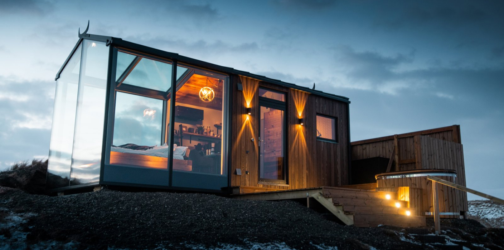
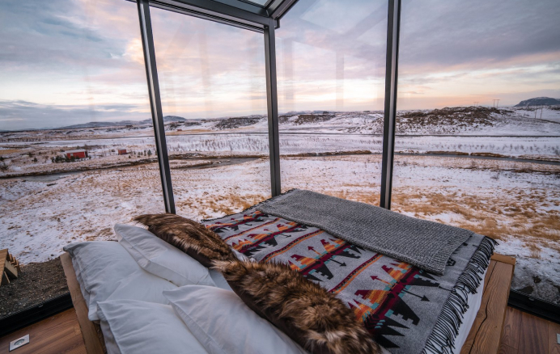

The Cabins
Løvtag’s three exclusive and comfortable cabins, Et, Ro and Ly, are designed by architect Sigurd Larsen. They all have an open space with a double bed, a double sofa bed, kitchen, separate toilet and an outdoor shower. On the roof, surrounded by treetops, there is a terrace, which is about nine meters above ground. The cottages are built around tall, old trees that go through the entire cottage from floor to ceiling.
